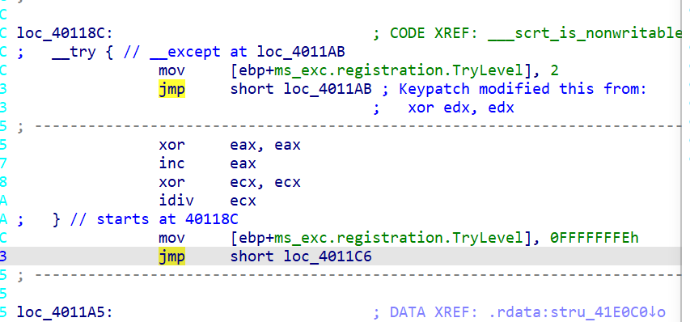

初探 明明之前了解过Tea相关的逆向题目，但是做题却屡屡受挫，就拿这道题目来说，十分让我失望，不能说没有思路，只能说一点思路都没有。我下定决心和他死磕到底，期末考试都不再复习了。
首先打开EXE文件，就是让输入东西，明显是校验输入。这里就不再截图了，下面进入IDA一探究竟。
声明：参考了DASCTF-NOVX联合出题人2022年度积分榜争夺赛 ，且分析部分可以直接略过。
0x01分析
这是main函数，显然逻辑还是比较清晰，何况我也已经修改了部分变量名。接下来就是着重看for循环里的这个加密函数。看看里面究竟搞了什么。
表面上来看就是做了普普通通的加密，参考了WP之后才发觉内有玄机。这也提醒了我，以后遇到类似题目，也不要忘记粗略审查一些汇编代码，说不定哪里就出现了和题解有关的东西。这道题就是汇编藏了捕获异常的代码，这部分是不会被反汇编为伪C的，我们需要自己识别。
第一处：
寄存器edx被复制为var24，并且进行了异或1234567h，var24就是偏移的意思，通过审查发现其就是魔数相加的地方。我们看看loc_401127发生了什么，换言之就是什么情况会触发这个异常。
看这个地方，首先将ecx赋值为v5，也就是魔数相加的那个变量，之后右移0x1F，由于最后一行的idiv ecx操作数是ecx，ecx在这里表示除数，如果值为0显然会抛出异常，也就是说，v5如果>>0x1F==0，会进行异或1234567h。
第二处：
这个是进行了赋值指令，这两个分别对应加密函数for循环内的v6和v7，这里是把这两个值赋值给了这两片内存区域，那么触发这个异常的条件是什么呢？
就是上图，这TryLevel本身也是程序异常处理机制的一部分，这个值会在异常发生时被用于确定异常处理的上下文。根据上文有个for循环控制这行代码来看，其实就是实现了一个循环估计，接下来看下一处，这个先不必理会。
其实这里有大用！我给忽略了
看起来没有下一处了，那么其实很明显，代码相加的时候，会额外考虑是否是>>0x1F==0，对于逆向者来说，又该怎么考虑呢？
0x2开干 我们逆向的时候，一定是让魔数从大到小变化，正向来看，魔数满足条件就会变化，逆向来看，我们应该考虑到在某次循环的时候，魔数已经变化了，并且将它值改变为正确的，举个例子，正向第三次循环魔数由0变成1，那么倒着第三轮的时候我们因该知道这时候魔数需要变化。其实就是在每轮解密之前加一个校验即可。
第一次错误！ 源码：
1 2 3 4 5 6 7 8 9 10 11 12 13 14 15 16 17 18 19 20 21 22 23 24 25 26 27 28 29 30 31 32 33 34 35 36 37 38 39 40 41 42 43 44 45 46 47 48 49 50 51 52 53 54 55 56 57 58 59 60 61 62 63 64 65 66 67 68 69 70 71 72 73 74 75 76 77 78 79 80 81 82 83 84 85 86 87 88 89 90 91 92 93 94 95 96 97 98 99 100 101 102 103 104 105 106 107 108 109 110 111 112 113 114 115 116 117 118 119 120 121 122 #define _DWORD unsigned int #include <stdio.h> int encrypto (unsigned int *input, _DWORD *key) { int result; int i; int v5; unsigned int v6; unsigned int v7; v7 = *input; v6 = input[1 ]; v5 = 0 ; for (i = 0 ; i < 32 ; ++i) { v5 += 0x9E3779B1 ; if (v5 >> 0x1f == 0 ) { v5 ^= 0x123456 ; } v7 += (key[1 ] + (v6 >> 5 )) ^ (v5 + v6) ^ (*key + 16 * v6); v6 += (key[3 ] + (v7 >> 5 )) ^ (v5 + v7) ^ (key[2 ] + 16 * v7); } *input = v7; result = 4 ; input[1 ] = v6; return result; } int decrypto (unsigned int *input, _DWORD *key) { int result; int i; int v5; unsigned int v6; unsigned int v7; v7 = *input; v6 = input[1 ]; for (int i = 0 ; i < 32 ; i++) { v5 += 0x9E3779B1 ; } for (i = 32 ; i >= 0 ; i--) { v6 += (key[3 ] + (v7 >> 5 )) ^ (v5 + v7) ^ (key[2 ] + 16 * v7); v7 += (key[1 ] + (v6 >> 5 )) ^ (v5 + v6) ^ (*key + 16 * v6); if (v5 >> 0x1f == 0 ) { v5 ^= 0x123456 ; } v5 -= 0x9E3779B1 ; } *input = v7; result = 4 ; input[1 ] = v6; return result; } int main () { unsigned char crypto[] = {48 , 181 , 39 , 94 , 243 , 247 , 190 , 189 , 143 , 106 , 81 , 227 , 254 , 108 , 131 , 93 , 9 , 250 , 61 , 216 , 122 , 115 , 252 , 142 , 163 , 83 , 168 , 85 , 197 , 78 , 86 , 122 }; unsigned char key[] = {1 , 35 , 69 , 103 , 137 , 171 , 205 , 239 , 254 , 220 , 186 , 152 , 118 , 84 , 50 , 16 }; decrypto((_DWORD *)crypto, (_DWORD *)key); return 1 ; }
很显然是不对的，调试看数组就能看出来，明显不是可见ASCII范围，看看人家高手的WP，我看看我问题出在哪里。
纠错！ 很明显分析的步骤出了问题。看别人可以通过patch的方式，还原整个算法过程，所以我也来进行patch尝试，显然是由于异常执行语句的位置，决定了不能够被hex_rays反编译，我们尝试清除这部分内容看看。
注意，patch的时候，目标地址=基地址+指令长度+偏移量。call、jmp后面四个字节跟的是地址！但是有时候我按照这个算出来的有问题，还是自己一个个尝试出来的。
第一处修改：
第二处修改：
这里发现使用keyPatch插件事半功倍！

第三处修改：
再次按下F5即可!
0x3终焉 至此，真的代码已经浮出水面：
（根据前面的分析，异或0x1234567只有在>>31==0时执行,我自己添加了一个判断条件）
1 2 3 4 5 6 7 8 9 10 11 12 13 14 15 16 17 18 19 20 21 22 23 24 25 26 27 28 int __cdecl __scrt_is_nonwritable_in_current_image(unsigned int a1, unsigned int *a2, _DWORD *a3){ int result; unsigned int i; int v5; unsigned int v6; unsigned int v7; v5 = 0 ; v7 = dword_41F038 ^ *a2; v6 = dword_41F03C ^ a2[1 ]; for ( i = 0 ; i < a1; ++i ) { if (v5>>31 ==0 ){ v5 = (dword_41F000 + v5) ^ 0x1234567 ; }else { v5 = (dword_41F000 + v5) } v7 += (a3[1 ] + (v6 >> 5 )) ^ (v5 + v6) ^ (*a3 + 16 * v6); v6 += (a3[3 ] + (v7 >> 5 )) ^ (v5 + v7) ^ (a3[2 ] + 16 * v7); } dword_41F038 = v7; dword_41F03C = v6; *a2 = v7; result = 4 ; a2[1 ] = v6; return result; }
根据main函数写出解密函数时候，有个问题：魔数的和该怎么求？
可以抽象为一个问题：一个数字，进行循环运算（在特定情况下会进行特殊运算），最终有个和。如何根据这个和和这个条件，反推出每一轮的数字的值呢？
再具体一点，假设1经过3轮自增1计算，只有最后一轮+0.最终和为3.设最后一轮运算为x特殊运算，我们倒退的时候就知道在这里是+0，所以3-0，即3进行特殊运算。由此可得，如果有特殊运算，倒着运算的时候会计算一次。
回到这个题目，初始化的时候，我们要进行这个运算（如果满足>>31==0)，否则解密的时候，会进行一次解密计算，如果符合条件，会进行异或，不考虑这个初始化运算，会影响以后每一轮的魔数，进而影响解密。
每一轮异或的就是上一轮的加密结果，只需要套用即可。
查阅一圈，感觉只能看懂这位大佬的：
DASCTF NOV - re - babytea - writeup_babytea ctf re-CSDN博客
解密代码如下（抄的上面的）：（动调也能拿数据，但是我暂时没学会）
来源于众多网络WP呀！
1 2 3 4 5 6 7 8 9 10 11 12 13 14 15 16 17 18 19 20 21 22 23 24 25 26 27 28 29 30 31 32 33 34 35 36 37 38 39 40 41 42 43 44 45 46 47 48 49 50 51 52 53 54 55 56 57 58 59 60 61 62 63 64 65 66 67 68 69 70 71 72 73 74 75 76 77 78 from ctypes import * sign = [] sum = c_uint32(0 ) d1 = 0x1234567 d2 = 0x89ABCDEF for i in range(32 ): delta = 0x9E3779B1 if (sum.value + delta) & 0x80000000 == 0 : sign.append(1 ) sum.value += delta sum.value ^= 0x1234567 else : sign.append(0 ) sum.value += delta def encrypt(v, k): v0, v1 = c_uint32(v[0 ]), c_uint32(v[1 ]) delta = 0x9E3779B1 k0, k1, k2, k3 = k[0 ], k[1 ], k[2 ], k[3 ] v0.value ^= 0x1234567 v1.value ^= 0x89ABCDEF total = c_uint32(0 ) for i in range(32 ): #print(hex(v0.value)) total.value += delta if sign[i] == 1 : total.value ^= 0x1234567 v0.value += ((v1.value << 4 ) + k0) ^ (v1.value + total.value) ^ ((v1.value >> 5 ) + k1) v1.value += ((v0.value << 4 ) + k2) ^ (v0.value + total.value) ^ ((v0.value >> 5 ) + k3) return v0.value, v1.value def decrypt(v, k): v0, v1 = c_uint32(v[0 ]), c_uint32(v[1 ]) #print(hex(v[0]), hex(v[1])) delta = 0x9E3779B1 k0, k1, k2, k3 = k[0 ], k[1 ], k[2 ], k[3 ] total = c_uint32(0xc78e4d05 ) for i in range(32 ): v1.value -= ((v0.value << 4 ) + k2) ^ (v0.value + total.value) ^ ((v0.value >> 5 ) + k3) v0.value -= ((v1.value << 4 ) + k0) ^ (v1.value + total.value) ^ ((v1.value >> 5 ) + k1) if sign[31 -i] == 1 : total.value ^= 0x1234567 total.value -= delta v0.value ^= d1 v1.value ^= d2 return v0.value, v1.value if __name__ == "__main__" : context = [0x5E27B530 , 0xBDBEF7F3 , 0xE3516A8F , 0x5D836CFE , 0xD83DFA09 , 0x8EFC737A , 0x55A853A3 , 0x7A564EC5 ] # 待加密的明文，两个32 位整型，即64b it的明文数据 # 四个key，每个是32b it，即密钥长度为128b it key = [0x67452301 , 0xEFCDAB89 , 0x98BADCFE , 0x10325476 ] # 202 CB962AC59075B964B07152D234B70 flag = b'' for i in range(0, 4): res = decrypt(context[i*2:i*2+2], key) d1 = context[i*2] d2 = context[i*2+1] flag +=res[0].to_bytes( 4, "little")+res[1].to_bytes(4, "little") print(flag)
如果用C语言，其实也能实现，但是我已经不想再搞这个题目，大概思路就是这样。下面这位大佬实现了，我也粘贴他的代码：
DASCTF NOV X联合出题人2022年度积分榜争夺赛 writeup - 1manityの秘密基地
1 2 3 4 5 6 7 8 9 10 11 12 13 14 15 16 17 18 19 20 21 22 23 24 25 26 27 28 29 30 31 32 33 34 35 36 37 38 39 40 41 42 43 44 45 46 47 48 49 50 51 52 53 54 55 #include <cstdio> unsigned long xor_key[] = { 0x1234567,0x89ABCDEF }; void decrypt(unsigned long* v, unsigned long* k) { unsigned long y = v[0], z = v[1], sum = 0xC78E4D05; unsigned long delta = 0x9e3779b1; unsigned long a = k[0], b = k[1], c = k[2], d = k[3]; for (int i = 31; i >= 0; i--) { z -= ((y << 4) + c) ^ (y + sum) ^ ((y >> 5) + d); y -= ((z << 4) + a) ^ (z + sum) ^ ((z >> 5) + b); /* end cycle */ if ((sum >> 0x1f) == 0) { sum ^= 0x1234567; } sum -= delta; } y ^= xor_key[0]; z ^= xor_key[1]; v[0] = y; v[1] = z; } int main() { unsigned long enflag[] = { 0x5E27B530,0xBDBEF7F3 ,0xE3516A8F,0x5D836CFE,0x0D83DFA09,0x8EFC737A,0x55A853A3,0x7A564EC5 }; unsigned long ori_enflag[] = { 0x5E27B530,0xBDBEF7F3 ,0xE3516A8F,0x5D836CFE,0x0D83DFA09,0x8EFC737A,0x55A853A3,0x7A564EC5 }; unsigned long key[] = { 0x67452301, 0xEFCDAB89, 0x98BADCFE, 0x10325476 }; printf("flag{") ; for (int i = 0; i < 4; i++) { decrypt(&enflag[i * 2], key); xor_key[0] = ori_enflag[2 * i]; xor_key[1] = ori_enflag[2 * i +1]; for (int j = 0; j < 4; j++) { printf("%c", enflag[i * 2] % 0x100); enflag[i * 2] >>= 8; } for (int j = 0; j < 4; j++) { printf("%c", enflag[i * 2 + 1] % 0x100); enflag[i * 2 + 1] >>= 8; } } printf("}"); }